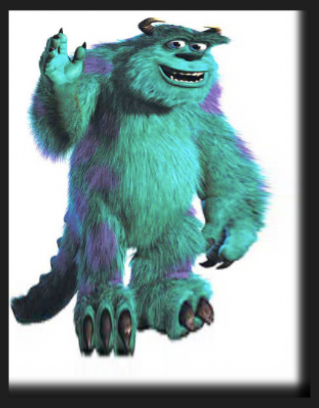
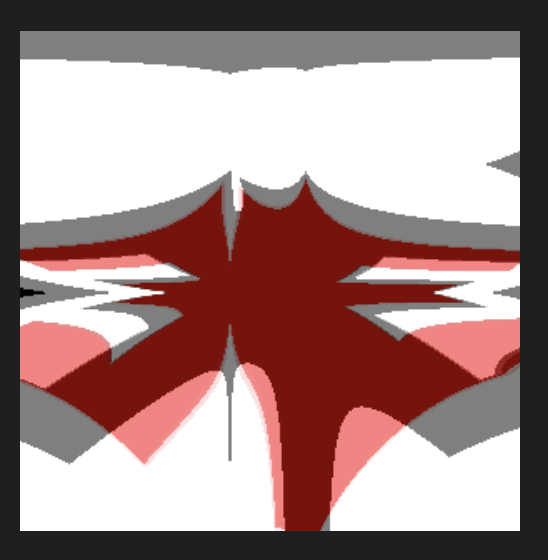

Henry Deutsch
hdeutsc3
Visual Studio Code
0 late days used
Everything is fully implemented & working
Screenshot of ./assignment1 --in F.bmp --bnMorph F_rotated.bmp f_single_line_translate_rotate.txt 0.5 --out out.bmp
Screenshot of ./assignment1 --in F.bmp --bnMorph F_scaled_2d.bmp f_multi_line_scale.txt 0.5 --out out.bmp
Screenshot of ./assignment1 --fun --in Images/sully.bmp --out Images/sully2.bmp using a gaussian filter. I've since replaced the sampling call with a nearest point sampling (in case one of the TA's tries to run it on Yoda, I don't want to get points off for it taking too long)
This filter is of an inverse sin function mapping both x and y coordinates from the source to the destination.
Art contest submission
(an aesthetic failure on the way to implementing Beier-Neely morph)
